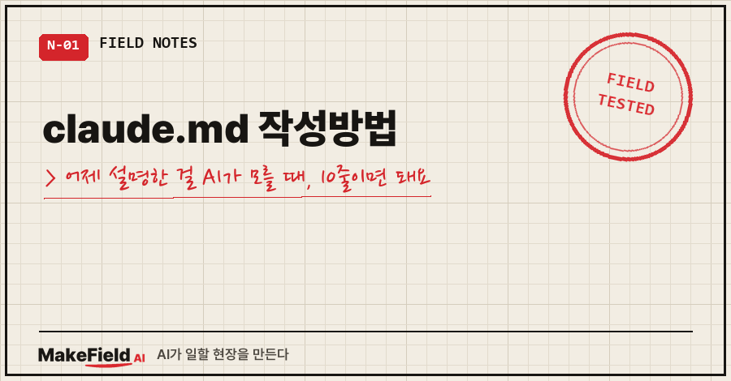
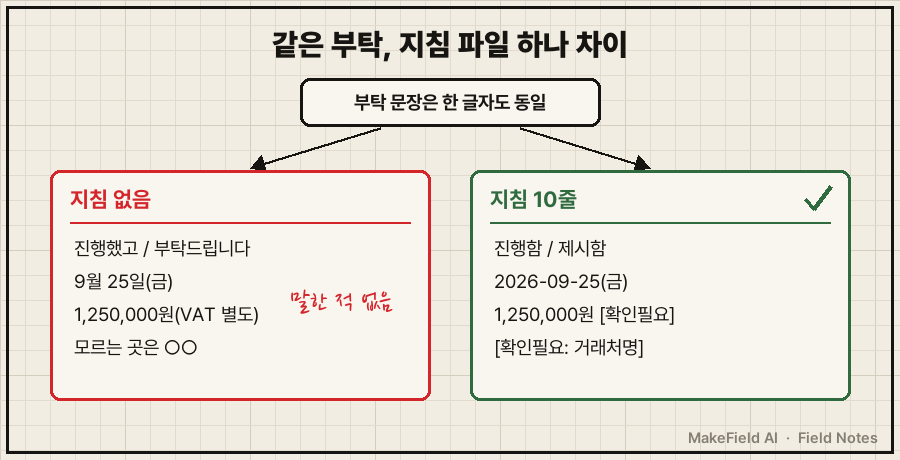
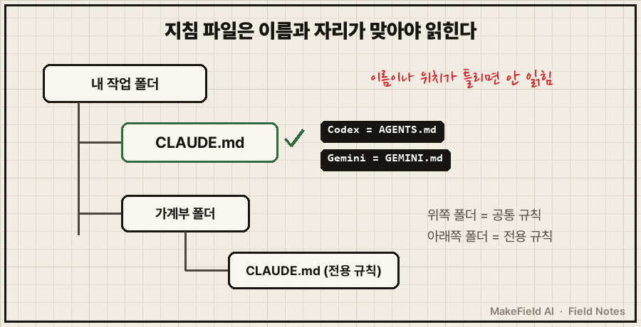
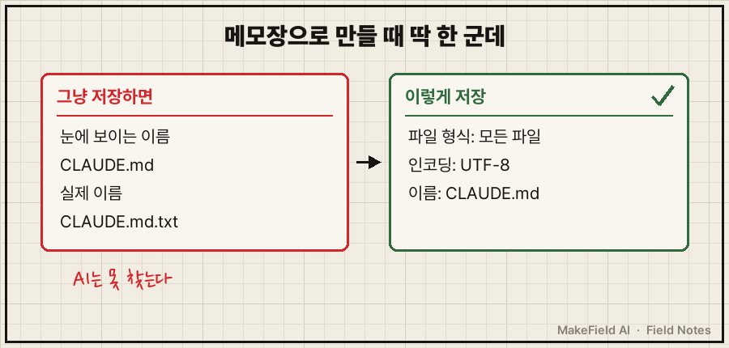
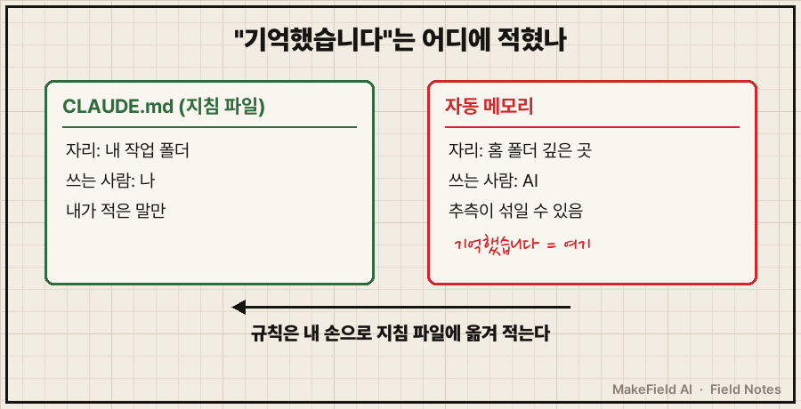

어제 AI한테 30분을 썼어요.
문장은 이렇게 끝내 달라, 날짜는 이렇게 써 달라, 모르는 숫자는 지어내지 마라.
오늘 아침 새 창을 열고 같은 일을 시켰더니, 그 30분이 한 줄도 안 남아 있더라고요.
결론부터 드릴게요. AI가 어제 설명을 모르는 건 고장이 아니라 설계이고, 매번 하던 설명을 작업 폴더 맨 위 claude.md 파일에 10줄로 적어 두면 새 창을 열 때마다 AI가 저절로 읽습니다. 그래서 claude.md 작성방법은 생각보다 단순해요. 이름과 위치만 맞으면 됩니다. Claude Code 공식 문서도 첫머리에 "모든 세션은 빈 컨텍스트 창에서 시작한다(Each Claude Code session begins with a fresh context window)"라고 적어 두었어요.
지난 편에서 에러 첫 줄 읽는 순서표를 만들었죠. 그러다 보면 AI에게 "작업 폴더 안에서만 해"를 매번 다시 말하게 되는데, 이번 편은 그 반복을 파일 한 장으로 없앱니다.
저는 공장 자동화 일을 15년째 하는 엔지니어예요. 매일 AI랑 일하지만 개발자는 아닙니다. 이번 편에서 기억할 한 줄은 이거예요. 프롬프트는 휘발되고, 지침은 상주합니다.
1. 오늘 만들 것 — 첫 지침 파일 10줄
작업 폴더 맨 위에 둘 파일이에요. 아래를 그대로 쓰되, 둘째 줄만 내가 실제로 만드는 문서로 바꾸면 됩니다.
# 업무 지침 (2026-09-28 작성)
- 나는 중소기업 사무직이다. 보고서·견적서·회의록을 주로 만든다
- 답은 한국어로, 결론부터 쓴다
- 보고서 문장은 "~함", "~임"으로 끝낸다
- 날짜는 2026-09-28 형식으로 쓴다
- 금액은 원 단위로, 천 단위마다 쉼표를 찍는다
- 비교할 것이 둘 이상이면 표로 정리한다
- 확인하지 못한 숫자는 [확인필요]로 표시한다. 지어내지 않는다
- 모르는 것은 추측하지 말고 먼저 묻는다첫 줄에 작성 날짜를 넣은 데는 이유가 있어요. 몇 달 뒤 "이거 언제 적은 규칙이지?"를 묻지 않으려고요. 규칙도 나이를 먹거든요.
2. 진짜 차이가 나나요? 같은 부탁을 두 번 해봤어요
책을 쓰면서 제 PC에서 실험했습니다(2026-09-28). 빈 폴더 한 번, 위 10줄을 넣은 폴더 한 번. 부탁 문장은 한 글자도 안 바꿨어요.
부탁: 지난주 금요일 거래처 미팅 결과를 팀장님께 올릴 보고 세 줄만 써줘.
미팅 날짜는 9월 25일, 견적 금액은 1250000원이었어.| 항목 | 지침 파일 없음 | 지침 파일 10줄 |
|---|---|---|
| 문장 끝 | "진행했고", "부탁드립니다" | "진행함", "제시함" |
| 날짜 | 9월 25일(금) | 2026-09-25(금) |
| 금액 | 1,250,000원(VAT 별도) | 1,250,000원 [확인필요: 부가세 포함 여부] |
| 모르는 부분 | ○○로 비워둠 | [확인필요: 거래처명] |

제가 소름 돋았던 건 금액 칸이에요. 지침이 없을 땐 AI가 부가세 별도라고 스스로 정해서 적었습니다. 저는 그런 말을 한 적이 없어요. 지침이 있을 땐 같은 자리에 [확인필요]가 붙었고요. 문체가 바뀐 것보다, 지어낸 조건이 사라진 게 더 큰 차이였습니다.
3. claude.md 설정방법 — 4단계로 따라하기
1단계. 내 도구가 읽는 파일 이름부터 확인합니다. 이름이 틀리면 아무리 잘 써도 안 읽혀요. 2026년 9월 기준 각 도구 공식 문서 내용입니다.
| 도구 | 파일 이름 | 읽혔는지 확인 |
|---|---|---|
| Claude Code | CLAUDE.md (없으면 AGENTS.md) | /context 입력 → Memory files 목록 |
| Codex CLI (GPT) | AGENTS.md | "Summarize the current instructions." 물어보기 |
| Antigravity CLI (구글) | AGENTS.md 또는 GEMINI.md | "지금 적용된 지침을 요약해줘" 물어보기 |
회사 라이선스로 Gemini CLI를 쓴다면 이름은 GEMINI.md, 확인은 /memory show예요. 이 글은 Claude Code로 설명하지만 GPT의 Codex CLI, 구글 Gemini CLI에서도 방식은 똑같고 파일 이름만 다릅니다. 도구를 여러 개 쓸 생각이면 처음부터 AGENTS.md로 시작해도 돼요.

위치도 봐야 해요. 작업 폴더 맨 위에 두면 그 폴더에서만, 홈 폴더 쪽 설정 폴더에 두면 모든 작업에 공통으로 읽힙니다. Claude Code는 위쪽 폴더의 CLAUDE.md도 같이 읽어서, 상위 폴더엔 공통 규칙, 하위 폴더엔 전용 규칙을 나눠 둘 수 있어요.
2단계. 작업 폴더 맨 위에 파일을 만듭니다. 제일 쉬운 건 AI에게 시키는 거예요.
이 폴더 맨 위에 CLAUDE.md 파일을 UTF-8로 만들고, 아래 내용을 그대로 넣어줘.메모장으로 직접 만들 땐 한 군데서 꼭 막혀요. 그냥 저장하면 이름이 CLAUDE.md.txt가 됩니다. 윈도우가 확장자를 숨겨서 눈엔 CLAUDE.md로 보이는데, AI는 이 파일을 못 찾아요. 저장 창 아래에서 파일 형식은 '모든 파일', 인코딩은 UTF-8로 고르세요.

3단계. 10줄을 내 일에 맞게 고칩니다. 처음엔 둘째 줄만 바꾸세요. 뭘 더 적을지는 다음 편 주제예요.
4단계. 읽혔는지 눈으로 확인합니다. 작업 폴더에서 Claude Code를 새로 켜고 /context를 칩니다.
> /context
(사용량 표가 먼저 나오고, 그 아래쪽에)
Memory files · /memory
└ C:\ai-work\CLAUDE.md여기에 방금 만든 파일이 보이면 성공, 안 보이면 이름이나 위치가 틀린 거예요. .txt부터 의심하세요. 두 번째 확인은 대화에서 한 번도 꺼낸 적 없는 규칙을 물어보는 겁니다. "우리 보고서 날짜는 어떤 형식으로 쓰기로 했지?"에 "2026-09-28 형식"이라고 답하면 지침이 살아 있는 거예요.
4. 여기서 이렇게 틀립니다 — "기억했습니다"를 그대로 믿는다
AI에게 "이거 기억해"라고 하면 "기억했습니다. 다음 세션에도 이어집니다"라고 답할 때가 있어요. 안심하고 넘어가기 딱 좋은 문장이죠.
저는 연습 폴더에서 이 말을 듣고 폴더를 열어봤는데 파일이 0개였어요. AI는 홈 폴더 깊숙이 자기 메모를 적어 두었고, 거기엔 제가 하지 않은 이유까지 추측으로 덧붙어 있었습니다. 이 실험 전체는 AI가 어제 대화를 기억 못 할 때 편에 출력 그대로 적어 두었어요.
자동완성에 'claude.md 자동 메모리'가 뜨는 걸 보면 저만 헷갈린 건 아닌 것 같아요. 둘은 이렇게 다릅니다(Claude Code 공식 메모리 문서 기준).
| 구분 | claude.md (지침 파일) | 자동 메모리 |
|---|---|---|
| 누가 쓰나 | 내가 쓴다 | AI가 스스로 쓴다 |
| 어디 있나 | 내 작업 폴더 | ~/.claude/projects/<프로젝트>/memory/ |
| 다른 PC에서 | 폴더를 옮기면 같이 간다 | 그 PC에만 남는다 |
| 내 말 vs 추측 | 내가 적은 것만 | 섞일 수 있다 |

그래서 저는 순서를 바꿨어요. 내가 통제해야 하는 규칙은 "기억해"라고 말하지 않고, 내 작업 폴더의 지침 파일에 적습니다. 적는 자리를 내가 정하고, 적힌 내용을 내 눈으로 봐요. 같은 설명을 두 번째 하고 있다는 느낌이 들면, 그게 지침 파일로 옮길 신호입니다.
5. 자주 묻는 질문
Q. claude.md 작성방법에 정답 양식이 있나요?
없어요. 마크다운 글머리표 몇 줄이면 충분합니다. 중요한 건 양식보다 이름(CLAUDE.md)과 위치(작업 폴더 맨 위), 그리고 /context로 실렸는지 확인하는 것이에요.
Q. 10줄 넘게 길게 써도 되나요?
처음부터 길게 쓰면 오히려 안 지켜지는 줄이 생겨요. 저는 반복해서 지적한 것만 한 줄씩 늘립니다. 그 기준은 다음 편에서 자세히 다뤄요.
Q. Codex나 Gemini로 갈아타면 다시 써야 하나요?
내용은 그대로 쓰고 파일 이름만 AGENTS.md나 GEMINI.md로 맞추면 됩니다. Claude Code는 CLAUDE.md가 없으면 AGENTS.md도 읽어요.
새 창을 열 때마다 처음부터 설명하고 계셨다면, 오늘 10줄 한 장으로 그 30분이 돌아옵니다. 다음 편에선 이 10줄에 무엇을 더 적어야 하는지, "반복해서 지적한 것만 규칙이 된다"는 기준으로 지침 v1을 키워 볼게요.
이 글은 『직장인의 AI 오답 노트』 2-1장을 블로그용으로 다시 쓴 것입니다. 같은 증상의 원인과 점검표 전체는 책에 있어요. 종이책 예스24 https://www.yes24.com/product/goods/198006547 · 종이책 알라딘 https://www.aladin.co.kr/shop/wproduct.aspx?ItemId=404397482 · 전자책 예스24 https://www.yes24.com/product/goods/197975471